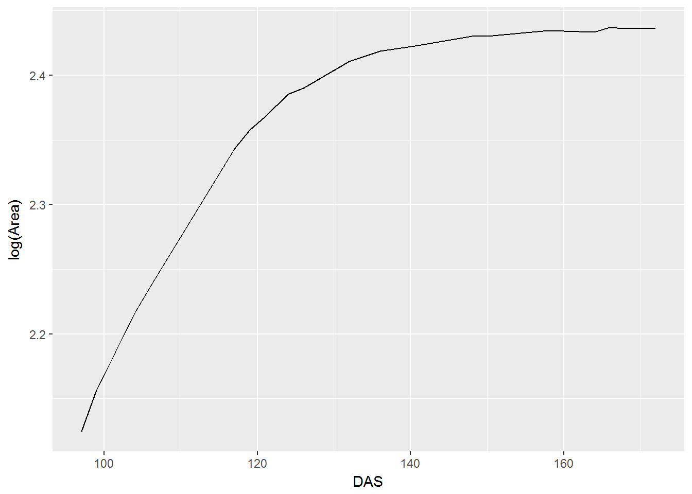
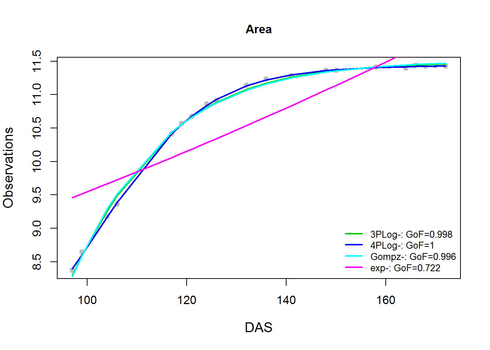

En este post presento el proceso para ajustar y analizar patrones de crecimiento usando curvas de Gompertz, logistic y 4-parametros logistica, potencia y exponenciales. La recoleccion de datos implica medir la tasa de crecimiento en funcion del tamano. Esto es util porque las tasas de crecimiento en muchos tamanos diferentes se pueden medir al mismo tiempo, lo que elimina el efecto del cambio ambiental del patron de crecimiento observado. La tecnica particular presentada aqui produce estimaciones de la varianza de los parametros de la curva para que las curvas de crecimiento de diferentes poblaciones puedan ser comparadas.
Para este ejemplo voy a utilizar los datos proporcionados por Paine et al “Best practice for growth analysis: model implementations and growth rate calculations to fosterecological inference”

Esta funcion evalua varios tipos de curvas y retorna la distancie entre los datos observados y los predecidos por cada modelo.
goodnessoffit = function(dobs, dpred){
gof <- 1 - (sum(( dobs - dpred )^2)/
sum((dobs - mean(dobs))^2))
return(gof)
}
#' Fit logist 3 parm model
#' @param sdat data
#' @param trait to be tested
fitLogis = function(sdat, trait){
y = as.formula(paste(trait, '~', 'SSlogis(DAS, Asym, xmid, scal)', sep=''))
tmp.logis <- getInitial(y, data = sdat)
fit.logis <- nlsLM(y, trace = F, control = list(maxiter=500), data = sdat)
return(fit.logis)
}
#' Fit logist 4 parm model
#' @param sdat data
#' @param trait to be tested
fitFpl = function(sdat, trait){
y = as.formula(paste(trait, '~', 'SSfpl(DAS, A, B, xmid, scal)', sep=''))
tmp.fpl <- getInitial(y, data = sdat)
fit.fpl <- nlsLM(y, data = sdat)
return(fit.fpl)
}
fitGomp = function(sdat, trait){
y = as.formula(paste(trait, '~', 'SSgompertz(DAS, Asym, b2, b3)', sep=''))
tmp.gomp <- getInitial(y, data = sdat)
fit.gomp <- nlsLM(y, data = sdat)
return(fit.gomp)
}
#' Fit exponential
#' @param sdat data
#' @param trait to be tested
fitExp = function(sdat, trait){
t = as.formula(paste(trait, '~', 'DAS', sep=''))
mod1 <- lm(t, data = sdat)
y = as.formula(paste(trait, '~', 'M0*exp(r*DAS)', sep=''))
fit.exp <- nlsLM(y, data = sdat, start = list(M0 = exp(coef(mod1)[1]), r = coef(mod1)[2]))
return(fit.exp)
}
#' fitBimodal
#' @param sdat data set
#' @title plot
#' @param mute produce a plot (TRUE) or not FALSE
fitBimodal = function(sdat, title=NULL, mute=FALSE){
library(mixtools)
response = sdat
mixmdl = normalmixEM(response)
if(mute == TRUE){
plot(mixmdl, which=2, main2=title)
lines(density(response), lty=2, lwd=2)
}
return(mixmdl)
}Ahora analiza las curvas y retorna plots y distancias finales
testModels = function(sdat, trait)
{
m = list()
m[['3PLog']] = fitLogis(sdat, trait)
m[['4PLog']] = fitFpl(sdat, trait)
m[['Gompz']] = fitGomp(sdat, trait)
m[['exp']] = fitExp(sdat, trait)
plot(sdat[['DAS']], sdat[[trait]], pch=19, col="grey" , cex.main=1, cex.lab=1.2,
main=trait, xlab="DAS", ylab="Observations")
le <- c()
for(i in names(m)){
lines(sdat[['DAS']], predict(m[[i]]), col=(which(names(m) == i)+2), lwd=2)
gof = goodnessoffit(sdat[[trait]], predict(m[[i]]))
le <- c(le, sprintf("%s-: GoF=%s", i, round(gof, 3)))
}
legend("bottomright", legend=le, lwd=2, col=3:6, bty="n", cex=0.8)
}
testModels(dat, 'Area')